Break-fast
Il progetto
Descrizione del progetto
Progetto realizzato nell'ambito del Corso di Computer Animation, tenuto dai proff. Miglio Edie e Cattoglio Francesco; lo scopo del progetto era quello di creare un'animazione con un software di grafica 3D, nel nostro caso Blender, che comprendesse l'uso di fluidi per simulare delle sostanze dolci.
Soggetto
L'animazione è ambientata in un'innovativa sala da pranzo automatizzata, all'interno della quale viene servita la colazione tramite un rullo trasportatore; I dolci che si trovano su quest'ultimo vengono guarniti con diversi tipi di glasse, cioccolato e marmellata, terminandone la preparazione. Nella stanza è inoltre presente un ricco buffet al tavolo, sul quale campeggia una grande fontana di cioccolato funzionante.
Il titolo dell'animazione, "Break-fast", fa riferimento alla velocità dei robot che assemblano le varie pietanze, oltre che ad essere un gioco di parole con un chiaro riferimento alla parola inglese "Breakfast", ovvero colazione.


Visual references
Ispirazioni visive
L'estetica del progetto si ispira alle cucine e ai diner americani degli anni '50, con "elettrodomestici" e arredi color pastello, con un pavimento a scacchi bianchi e neri. I dolci sono quelli tipici della cultura americana, come pancakes, donuts e cupcakes, con qualche elemento di contaminazione europea, quali macaron ed eclair, di provenienza francese.

Modellazione
Dolci colorati in un ambiente robotico
Gli elementi che vanno a comporre la scena sono stati realizzati tramite modellazione poligonale. I dolci hanno un aspetto realistico, ottenuto sia grazie all'uso di displacement map che della tecnica dello sculpting, per ottenere i dettagli e le irregolarità tipiche delle superfici dei cibi e dei materiali organici. Al contrario gli elementi d'arredo sono caratterizzati da superfici lucide, metalliche e regolari, dai delicati colori pastello e accenti neri, in forte contrasto. Le forme sono prettamente curve, anche i robot da cucina sono formati da linee morbide.
I modelli:
 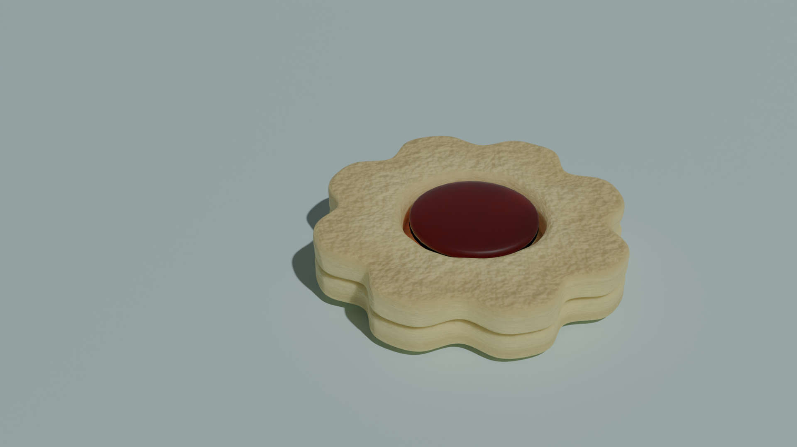
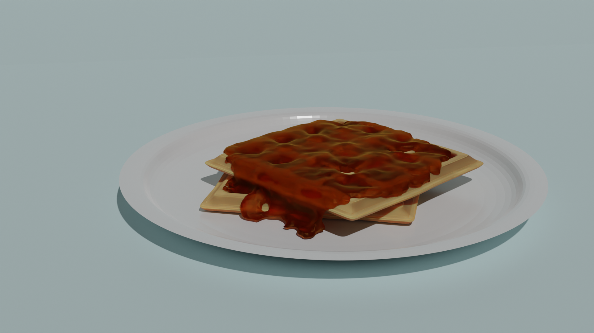
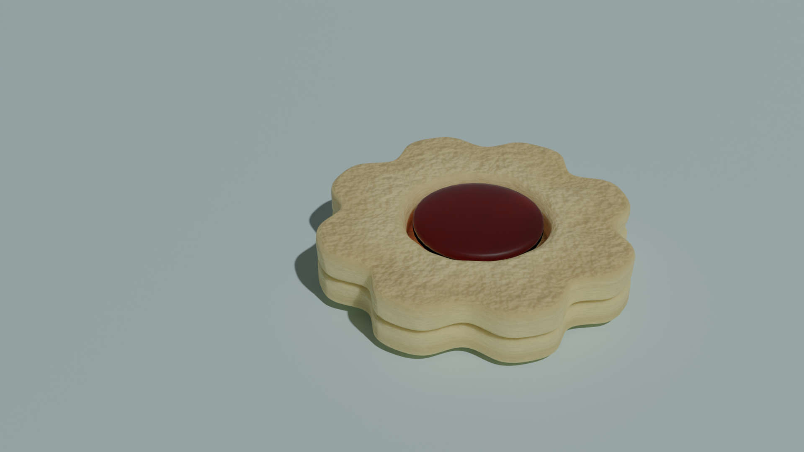
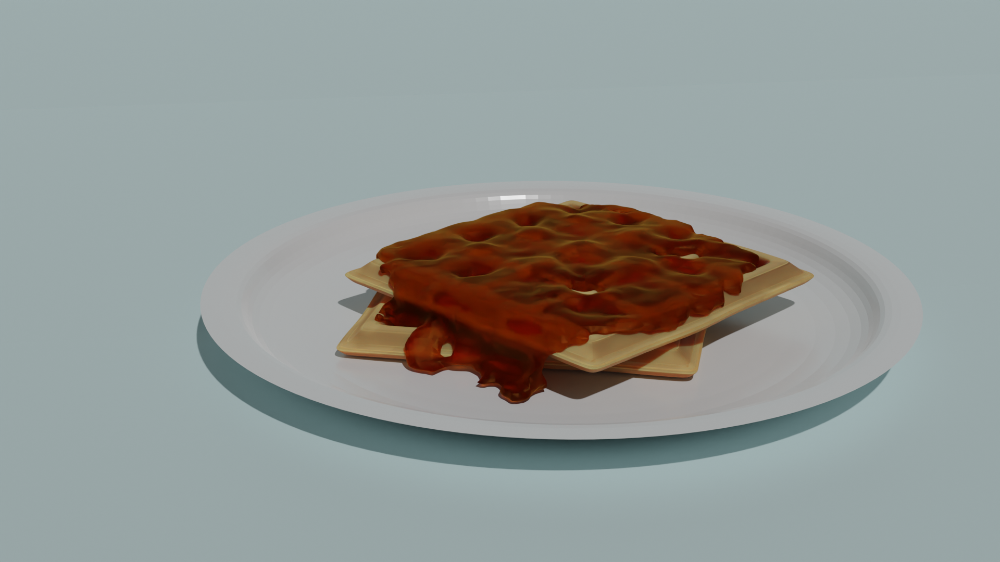
 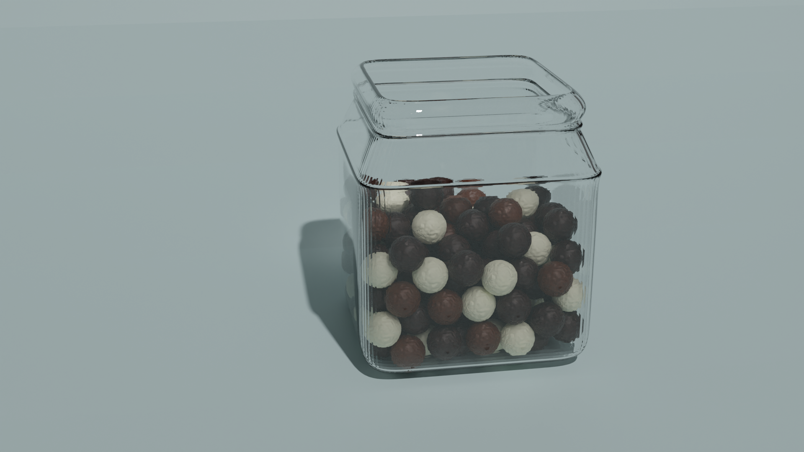
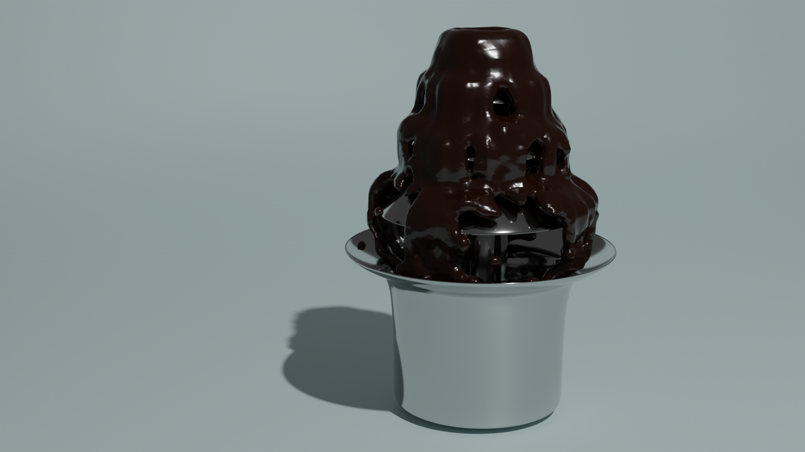
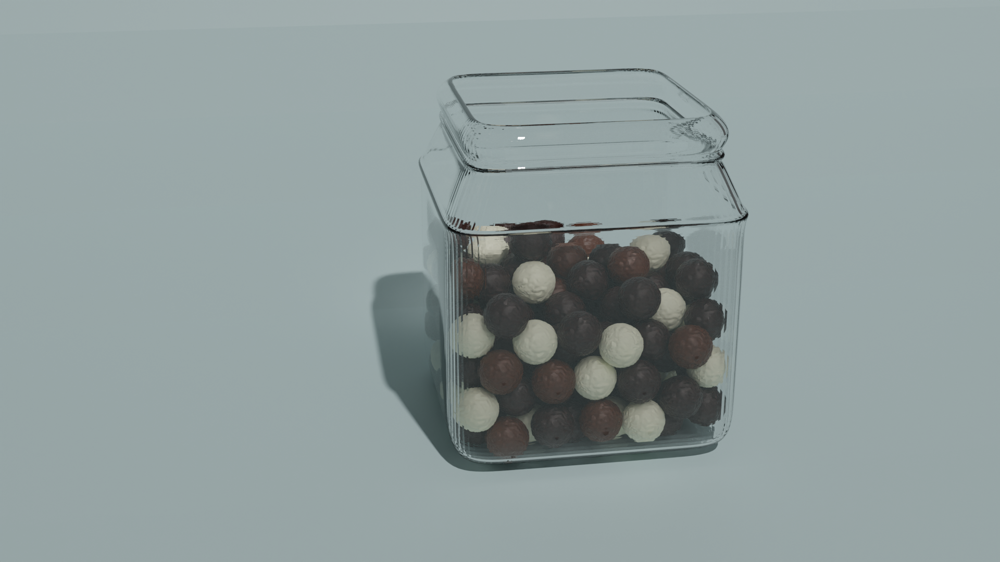
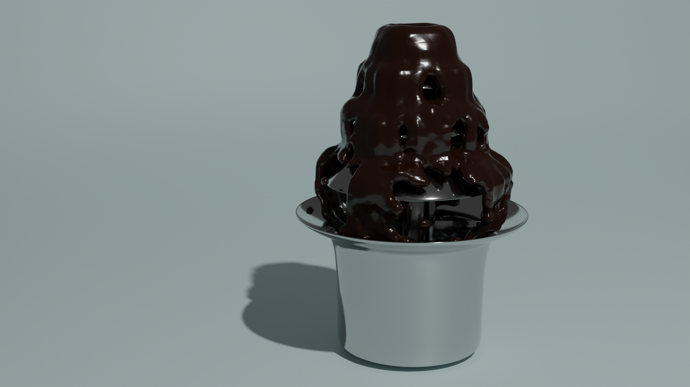
 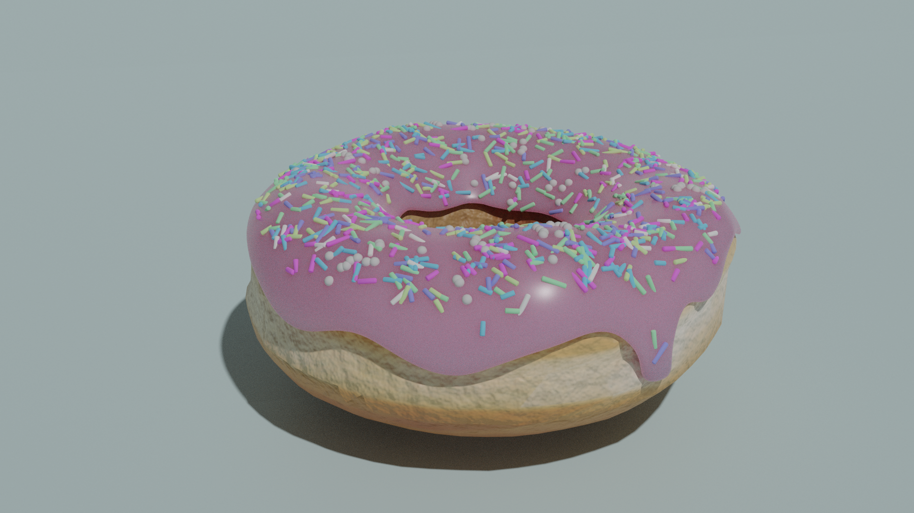
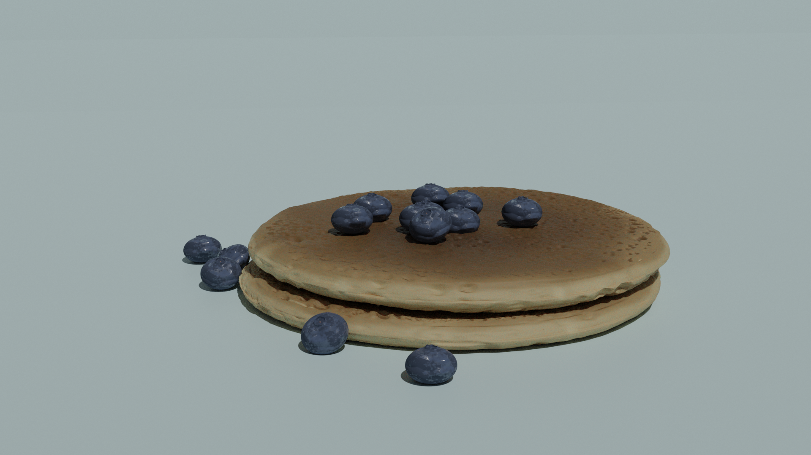
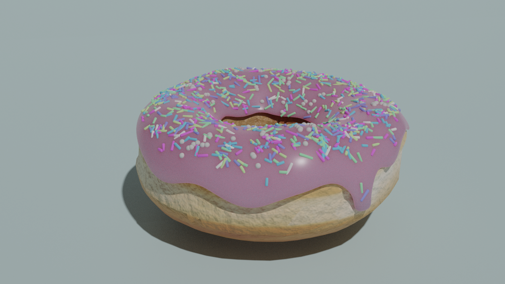
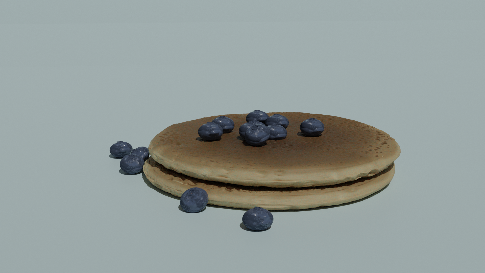
Animazione
Simulazione fluidi
I fluidi sono i veri protagonisti dell'animazione. Ogni fluido è stato simulato in modo da ricreare in maniera realistica una guarnizione diversa: cioccolato, glassa, marmellata, andando a lavorare sul parametro della densità. I materiali, inoltre, vanno a completare visivamente il rendimento del fluido e il suo comportamento rispetto alla luce.
Nel caso del waffle che si trova sul primo tavolo, ricoperto di sciroppo d'acero "statico", avevamo bisogno che la mesh dello sciroppo aderisse perfettamente a quella del waffle, proprio come quando un liquido si posa su un oggetto; per ottenere questo risultato abbiamo quindi simulato il fluido, per poi convertirlo in mesh statica e applicargli il materiale corretto.
Sistemi particellari
Emission - Per creare l'effetto della granella in movimento che cade e si posa sulla ciambella è stato utilizzato un sistema particellare di tipo "emission" applicando una rotazione in caduta per dare più realismo al movimento.
Hair - La granella statica, applicata ai donut del buffet, è stata realizzata con un sistema particellare di tipo "hair" sulla glassa, con particelle di forma cilindrica di varie dimensioni.
Fontana di cioccolato
La fontana di cioccolato è stata azionata tramite una simulazione fluidi composta oltre dal dominio, flusso e effettore, anche da un flusso negativo, "Outflow", posto alla base della fontana stessa, che "assorbe" e rimuove il fluido dalla scena, evitando così che il cioccolato trabocchi. La fontana viene poi "spenta", interrompendo il flusso di cioccolato, durante l'ultima inquadratura totale sulla camera.
Nastro trasportatore
Il rullo trasportatore stile "sushi", nonostante si muova per due volte in tutta la durata dell'animazione, in realtà compie un solo movimento, ripetuto per dare un'illusione di continuità.
Cioccolatini
Sul tavolo del buffet sono presenti due barattoli con all'interno dei cioccolatini di vari tipi di cioccolato; per far sì che le sfere fossero disposte in modo fisicamente realistico, è stata utilizzata una simulazione fisica, di tipo "rigid bodies". I cioccolatini, di forma sferica, sono stati creati a partire da una singola mesh, moltiplicata in seguito con il modificatore "array"; infine, attivando la simulazione, sono stati fatti cadere all'interno del barattolo dove, scontrandosi sia tra di loro che con il contenitore, si sono infine assestati e disposti in maniera corretta.
Movimenti dei macchinari
I robot che guarniscono i dolci compiono movimenti semplici, traslazioni sugli assi x e y oppure rotazioni, ma risultano molto efficaci per svolgere il lavoro all'interno dell'animazione.
Movimento camera
La camera segue i dolci nel corso della loro preparazione sul rullo, per poi soffermarsi sul primo tavolo; grazie ad uno zoom sulla cioccolata calda si passa alla fontana di cioccolato, che porta ad una carrellata sul buffet. La scena si conclude con una visione dall'alto dell'intera stanza, coperta infine da una colata di glassa.

Post produzione
Musica
La musica che accompagna l'animazione è la versione strumentale dell'opening del secondo episodio della serie Marvel "WandaVision"; la scelta è ricaduta su questo brano poichè l'episodio della serie da cui è tratto è ambientato a cavallo tra gli anni '50 e '60, risultando così coerente con il tema e con l'atmosfera giocosa del video.
Transizioni e titoli
Il video inizia con l'apparizione del titolo, un lettering disegnato a mano ispirato alle serie tv degli anni '50. Il fil rouge dell'intera animazione, ovvero l'uso dei fluidi, è presente anche come elemento di transizione sia per l'apparizione dei titoli di testa e coda, sotto forma di glassa, che per il passaggio dalla prima scena sul tavolo dei robot alla seconda scena, ambientata sul tavolo del buffet; in questo caso è il cioccolato fuso a fare da trait d'union tra le due scene.
Conclusioni
Considerazioni finali
Il progetto, durante la sua realizzazione, si è evoluto molto, soprattutto per quanto riguarda il percorso del nastro trasportatore, studiato per adattarsi al meglio al resto dell'ambientazione e per essere funzionale all'animazione.
La vera sfida all'interno del processo di animazione è stata la simulazione dei fluidi; rendere la consistenza di un fluido, che fosse una glassa, della marmellata o una bevanda, non è stato affatto semplice. A questa difficoltà si aggiunge il lungo tempo necessario al computer per elaborare i dati delle simulazioni.
Una fase molto interessante della realizzazione del progetto è stata quella della modellazione dei dolci: cercare di ricreare le superfici dei cibi, prettamente irregolari, è stata una sfida molto stimolante. L'utilizzo della modalità "sculpting" ci è stata molto utile proprio per riprodurre le irregolarità delle suddette superfici e inoltre ci ha permesso di apprendere una nuova tecnica.
Crediti
Tutorial consultati durante la realizzazione del progetto
Ispirazione per la transizione finale
Modelli 3D
Ispirazione per i portatovaglioli
Musica
WandaVision Episode 2 Intro [INSTRUMENTAL]
Texture
Google Images
Progetto realizzato da Arianna Tarzia e Francesca Vita
Politecnico di Milano A.A. 2021/22
Computer Animation